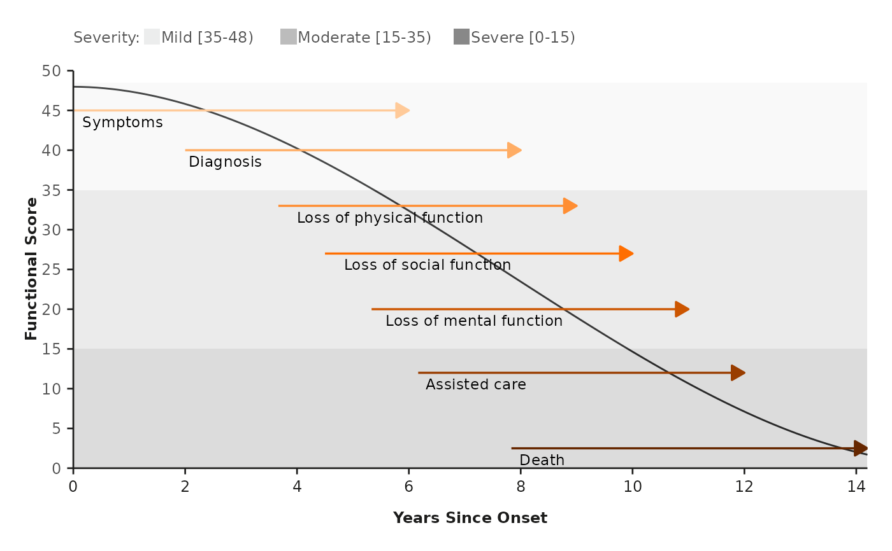

Line Chart
line_chart(
func,
data_bands,
data_lines,
show_bands = "Y",
show_points = "N",
line_size = 0.6,
line_type = "solid",
xmin,
xmax,
ymin,
ymax,
xbreaks,
ybreaks,
xlab,
ylab,
legend_title
)the name of a function, or a call or an expression written as a function of x
(data.frame) a data frame with 3 variables named the following:
level: level each band represents
ystart: starting point of each band
yend: ending point of each band
col: color of each band
(data.frame) a data frame with 7 variables named the following:
stage: stage each line represents
xstart: x-axis starting point of each line
xend: x-axis ending point of each line
y: y-axis position of each line
col: color of each line
xpos: x-axis position of each annotation (relative to xstart)
ypos: y-axis position of each annotation (relative to y)
(character) a logical value indicating whether to show bands
in the plot (Y, N)
(character) a logical value indicating whether to show points
at the start of the arrows (Y, N)
(numeric) size of the line
(character) type of the line
(numeric) starting point of x axis
(numeric) ending point of x axis
(numeric) starting point of y axis
(numeric) ending point of y axis
(numeric) x axis breaks
(numeric) y axis breaks
(character) x axis label
(character) y axis label
(character) legend title
a ggplot object
func <- function(x) 47.982 - 0.0305 * x - 0.57525 * x^2 + 0.0245 * x^3
line_chart(
func = func,
data_bands = data_bands,
data_lines = data_lines,
xmin = 0,
xmax = 14.2,
ymin = 0,
ymax = 50,
xbreaks = seq(0, 14, 2),
ybreaks = seq(0, 50, 5),
xlab = "Years Since Onset",
ylab = "Functional Score",
legend_title = "Severity: "
)
#> Scale for x is already present.
#> Adding another scale for x, which will replace the existing scale.
